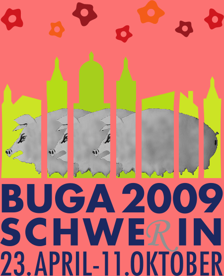

Alles hat sein Vor- und Nachspiel
Der Chemiker Fritz Haber schuf aus sauberer Luft und Wasserstoff das ätzend stinkende Ammoniak.
Rechtzeitig zu Beginn des ersten Weltkrieges stellt er seine Arbeit der deutschen Obersten Heeresleitung zur Verfügung.
Am 22. April1915 überwacht Haber den ersten deutschen Gasangriff bei Ypern:
Seine Frau Clara, geb. Immerwahr, eine Chemikerin, nimmt sich das Leben.
Am 23 April 2009 wurde die 1. BUGA in MV eröffnet.
Das einmalige Großereignis in der kleinsten Landeshauptstadt im Westen des Ostens ist zu Ende. Pünktlich zum 60. Jahrestag der DDR verkündeten die Organisatoren 1.830.000 Gäste. Auch die pompöse Gedächtnisfeier der friedlichen Revolution ist vorbei. Der amtierende US-Präsident hat den gleichen noblen Sprengstoffpreis empfangen, wie der inzwischen längst verstorbene Witwer Fritz.
Doch nichts geht über einen kleinen Rückblick in den verdufteten Frühling:
Hier war der einzig wahre Aussenstandort der BUGA2009.
10.000 Muttersauen müssen pro Jahr 250.000 Ferkel produzieren, im Osten auf dem Lande, in einer Fabrik. So will es die Landesregierung im Schloss Schwerin. In großer Koalition dirigiert sie das Leben am Tollensetal. Das stinkt…“ das alles und noch viel mehr ist seit 2009 auf einer ganz anderen Website zu lesen: buga2009.blogsport.de/luegenmuseum/
